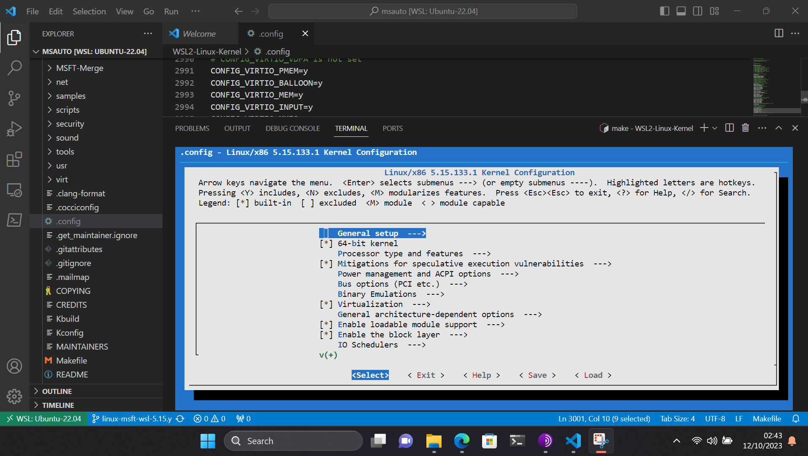
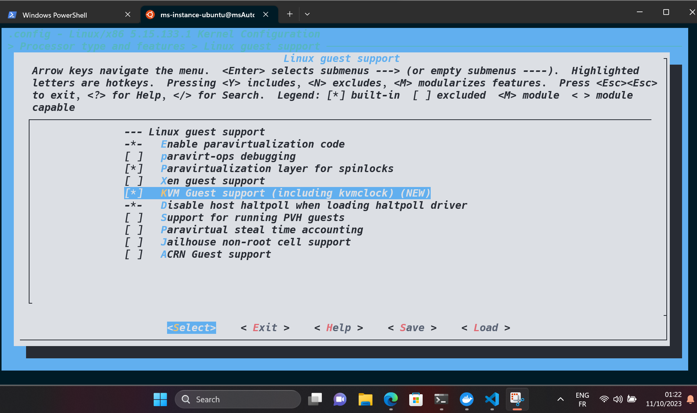
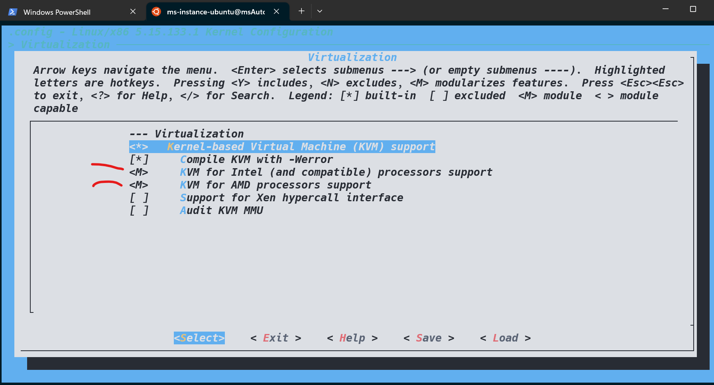
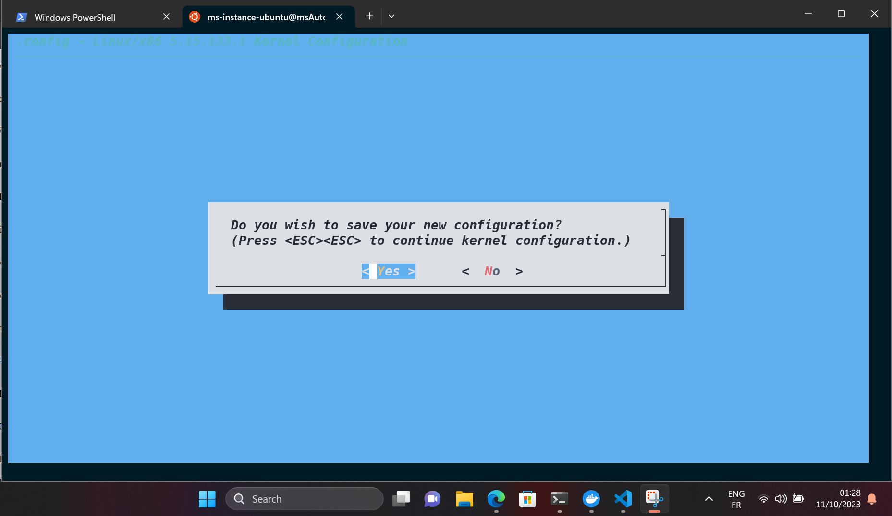
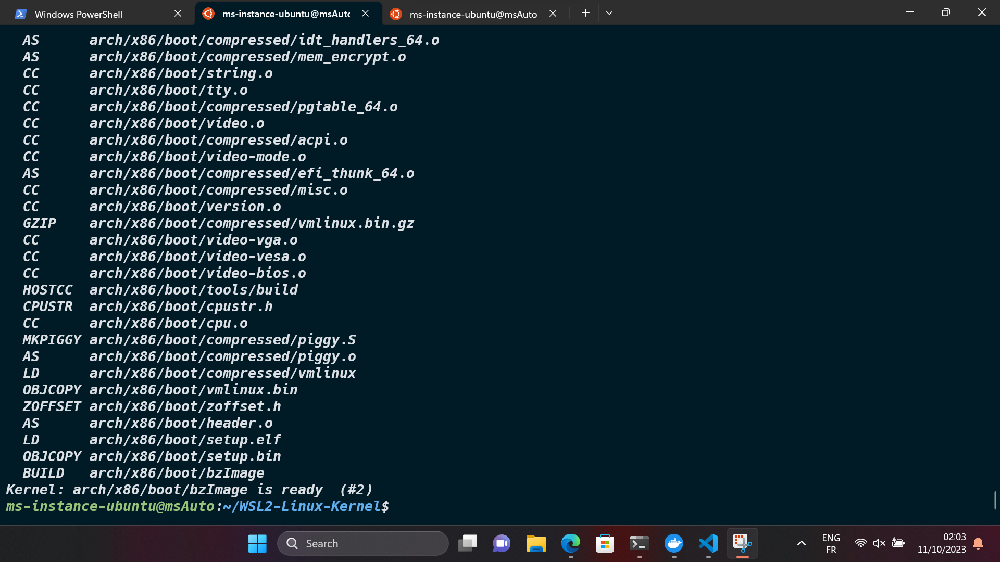
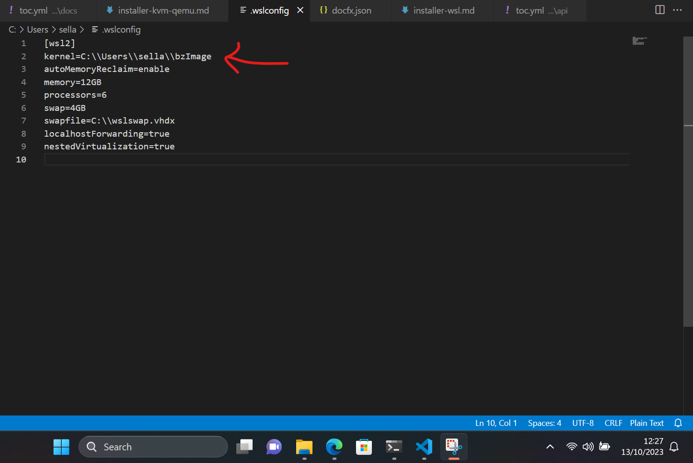
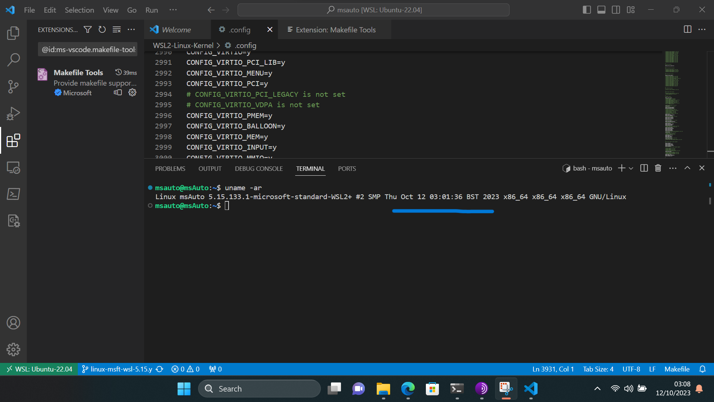
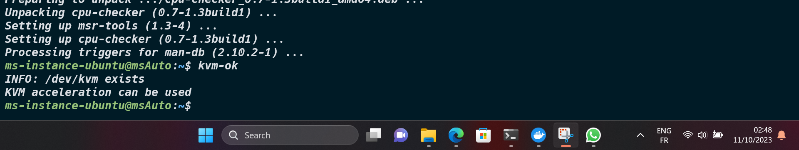

Virtualisation avec KVM
Pour installer KVM sur une distribution Ubuntu dans WSL 2, nous devrons reconstruire le noyau (kernel) Microsoft. Cela implique le téléchargement de la configuration du noyau, sa modification, et enfin la reconstruction du noyau.
Objectif 2 : Installer KVM sur WSL 2
Le noyau Microsoft WSL 2 est disponible sur GitHub WSL2-Linux-Kernel
Update and upgrade
Nous nous recommandons de maintenir nos packages à jour en utilisant le gestionnaire de packages de notre distribution. Pour Ubuntu, utilisez la commande suivante :
sudo apt update && sudo apt upgrade
Windows ne gère pas les mises à jour ou les mises à niveau de notre distribution Linux.
Construire notre propre noyau
- Utilisons
gitdans Ubuntu pour cloner le code source du noyau WSL 2 :
git clone --depth 1 https://github.com/microsoft/WSL2-Linux-Kernel
- Installons les
dépendancesnécessaires pour la construction de notre noyau en utilisant apt :
sudo apt -y install build-essential libncurses-dev bison flex libssl-dev libelf-dev
- Changeons de répertoire en accédant au dossier du projet Git :
cd WSL2-Linux-Kernel/
- Copions le fichier de config du noyau de Microsoft dans le dossier racine du projet sous le nom
.config:
cp Microsoft/config-wsl .config
- Ouvrons le fichier de config avec un éditeur de texte comme Nano, Vim ou
VS Code:
# Nous préférons utiliser VS Code
code .
- Les modifications manuelles à effectuer sont les suivantes :
KVM_GUEST=y
CONFIG_KVM=y
CONFIG_KVM_INTEL=m # Pour Intel CPU
CONFIG_KVM_AMD=m # Pour AMD CPU
CONFIG_VHOST=y
- Éditons les options du noyau :
make menuconfig
- Après un peu de compilation, nous accéderons au menu de
config du noyau Linux.

- Accédons à
Processor type and features, puisLinux guest support, et activonsKVM Guest support.

Ensuite, utilisons les touches fléchées gauche et droite pour sélectionner
Exitet appuyons deux fois sur Entrée pour revenir au niveau supérieur du répertoire de configuration.Utilisons la touche Entrée pour accéder au répertoire
Virtualisation. Ici, utilisons la barre d'espace ou la toucheYpour le marquer avec un astérisque (*) pour activer leKernel-based Virtual Machine (KVM) support. Activons égalementKVM for AMD processors supporten tant que module avec la toucheM.

- Sélectionnons "Exit" deux fois et nous serons invités à enregistrer notre nouvelle configuration. Sélectionnons
Yes.

- Ensuite, nous construisons notre noyau en utilisant la commande
make.
Warning
Après avoir exécuté cette commande, nous pourrions rencontrer deux erreurs. La première nous informera que
l'outil bc (calculatrice binaire) n'est pas installé sur notre système. La deuxième erreur signalera un
problème dans la génération du format BTF (BPF Type Format) du noyau Linux. Le BTF est essentiel pour le
débogage et l'analyse du noyau.
Pour résoudre ce problème, nous devons installer bc et dwarves sur notre système. Voici comment procéder :
sudo apt update
sudo apt install bc
sudo apt install dwarves
- Maintenant, nous construisons notre noyau (8 cœurs) :
make -j 8

Ah, les plaisirs de l'observation de la construction du noyau Linux !
- Si la compilation réussit, nous serons informés que le noyau est prêt :
Kernel: arch/x86/boot/bzImage is ready
- Maintenant, nous devons créer et installer les fonctionnalités que nous avons signalées comme
modules. Ils seront installés sur notre système de fichiers de distribution dans/lib/modulescar ils ne sont pas intégrés au noyau :
sudo make modules_install
- Déplaçons
notre propre noyauvers notre système de fichiers Windows pour le rendre accessible à WSL 2 :
cp arch/x86/boot/bzImage $(wslpath $(wslvar USERPROFILE))
- Ensuite, ouvrons le fichier
.wslconfigpour utiliser notre noyau personnalisé :
kernel=C:\\Users\\sella\\bzImage
nestedVirtualization=true

- Créons un fichier appelé
kvm-mspour définir les options de notre module "KVM for AMD processors support", appelékvm-amd:
sudo vim /etc/modprobe.d/kvm-ms.conf
- Ajoutons les options suivantes pour activer la Nested virtualization et d'autres options avancées :
# Nested virtualization et vitesse
options kvm-amd nested=1
options kvm-amd enable_shadow_vmcs=1
options kvm-amd enable_apicv=1
options kvm-amd ept=1
# Enregistrons et quittons.
- Ensuite,
redémarronsnotre environnement WSL avec notre nouveau noyau :
wsl.exe --shutdown # Powershell
- Une fois redémarré, nous pouvons confirmer que nous exécutons le nouveau noyau :
uname -ar

- Installons un outil appelé
kvm-okpour confirmer la disponibilité de la fonctionnalitéKVM nested:
sudo apt -y install cpu-checker
# Exécutons "kvm-ok" :
kvm-ok
# Le module générera un message indiquant que "/dev/kvm existe."

Note
Si nous recevons le message KVM acceleration can be used, nous avons chargé avec succès le module du noyau > et KVM fonctionne désormais. Félicitations !
- Enfin, nous pouvons confirmer le support de la KVM nested virtualization et configurer les autorisations d'accès pour
/dev/kvm:
cat /sys/module/kvm_intel/parameters/nested # Y ou 1 = is enable
sudo chmod 666 /dev/kvm
Problèmes Potentiels et Solutions
Lors de l'installation de KVM sous WSL 2 Windows, nous pourrions rencontrer certains problèmes, mais voici les solutions proposées :
| Problème | Description | Statut |
|---|---|---|
| Problème 1 | - WSL ne prend pas en charge systemd. | init |
| Problème 2 | - Acceleration for KVM guests n'est pas activée. | disable |
| Solution | - Construire notre propre noyau. | bzImage |
| Problème 3 | - KVM support is not available & /dev/kvm does not exist. | not available |
| Solution | - Chargeons le module du noyau kvm_amd. | /lib/modules/ |
# Chargeons le module du noyau kvm_amd.
sudo modprobe kvm_amd
Ressources supplémentaires
- Pour plus de détails, vous pouvez consulter les liens suivants: The Linux Kernel Archives, Genie, KVM, qu'est-ce que c'est ?, Microsoft - WSL2-Linux-Kernel, Documentation Ubuntu Linux, ARM vs x86: What's the difference?, How to script make menuconfig to automate Linux kernel, GNU Make, eBPF - The Future of Networking & Security.
Mots techniques
Virtualisation, KVM (Kernel-based Virtual Machine), Noyau (kernel) Microsoft, GitHub WSL2-Linux-Kernel, Git, Ubuntu, WSL 2 (Windows Subsystem for Linux 2), Configuration du noyau, Dépendances, apt (Advanced Package Tool), Compilation, BTF (BPF Type Format), bc (calculatrice binaire), Windows, Nested virtualization, modprobe, CPU-checker, systemd, Architecture x86.